The Share dialog box is located at the end of the toolbar, on the right side.
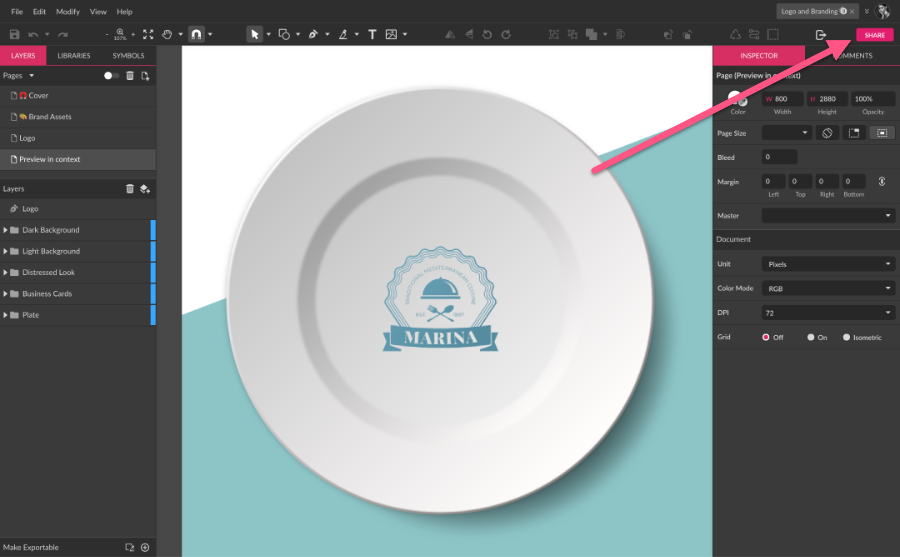
You can also call the Share dialog on the menu , where you will find the options to open the Share dialog and to open the link of a file shared with you.
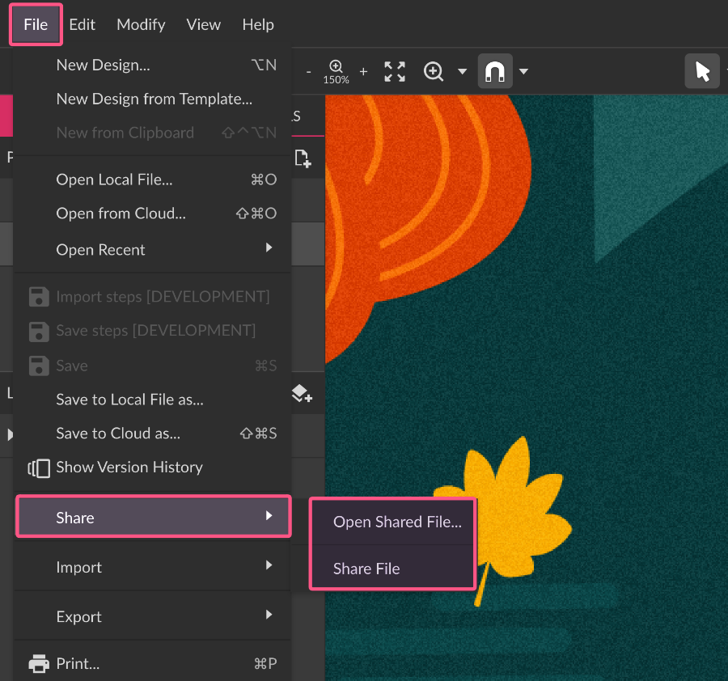
The “Open Shared File…” option allows to open more than one shared files at the same time:
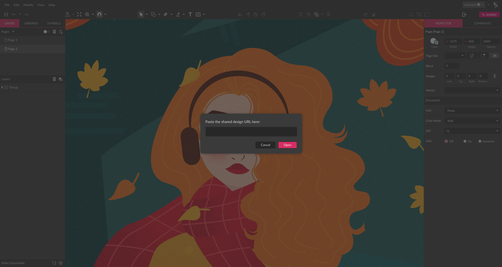
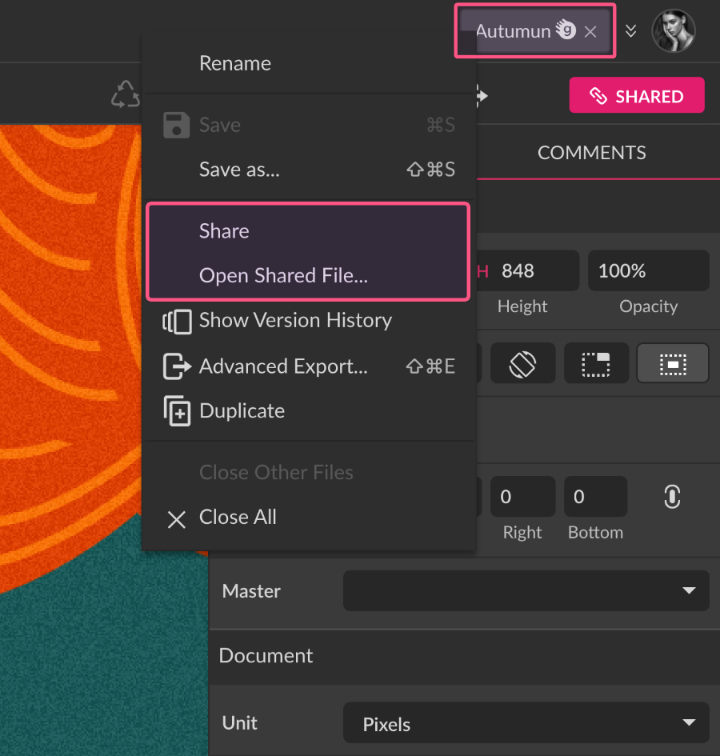
The Share dialog box offers two sharing options, public(1) or private sharing(2), each with its own drop-down to define the collaborator’s roles(3 and 4).
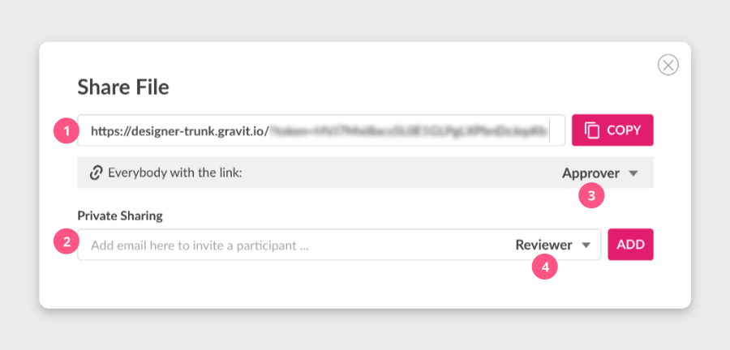
Public sharing
With the first option of the Share dialog box, it’s possible to create a public link, which you just need to copy by clicking the Copy(1) button and distribute to your collaborators. Notice that the collaborator role attributed to this link will be applied to all those with access to this link.
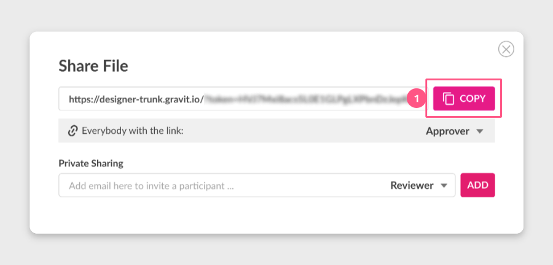
Private sharing
The second option of the Share dialog box allows you to create private sharing links that will be sent via email by adding the email of the user(1), attributing a role(2), and clicking Add(3).

You can invite as many people as you want, and the current collaborators with a private link will be listed under the email input field(1). A message will be displayed indicating that an email invite will be sent to those users you just added as soon as you close the Share Dialog(2).

After the dialog is closed, another message pops up confirming that the email invitations were sent.

Each collaborator with a Private Sharing link can have a different role, and you can change these roles at any time on the dropdown(1) right next to the listed user’s email, opening a list with the collaboration roles(2). In the same dropdown, it’s possible to resend the email invitation, and also remove that user’s access to the file.
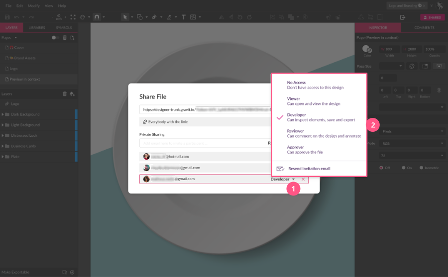
If you remove a collaborator’s access by choosing “No Access”, you can change it back to any other role at any time. To remove a collaborator from the list permanently (or until he’s invited via email again), click the “X” button(1) right next to the roles dropdown.
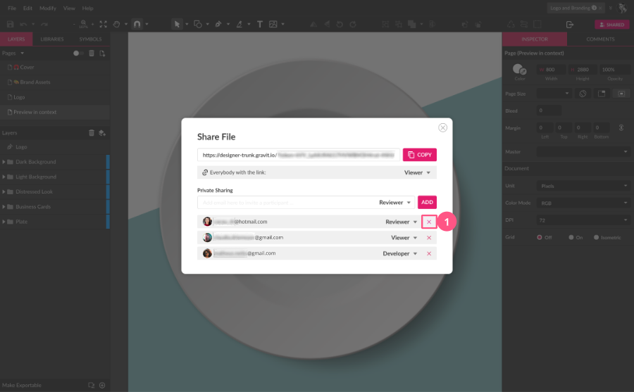
It’s indicated that a file is shared when you open it through the Share Dialog button itself. The icon differs whether it’s shared publicly only with a chain icon(1) or shared privately with the “people” icon(2).
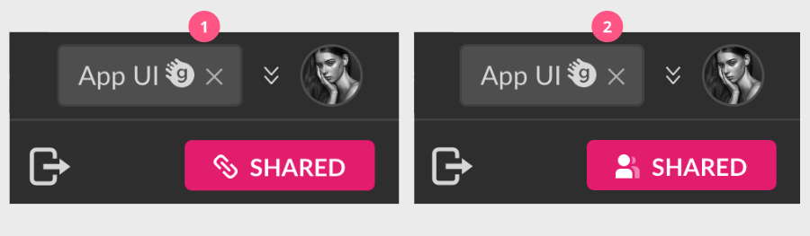
To know more about the collaborator roles, please check the Collaborator roles section.
Note: Note: Only files saved to the Gravit Designer Cloud will show the Share button. Local or unsaved files can’t be shared.
Guest access
Sharing Cloud files and adding annotations is not reserved for Gravit Designer users only, as you can share a file link with anyone who’s not a user as well through Guest Access.
On the Share Dialog, add the email of the guest you want to invite on the Private Sharing input field(1), choose a role, and click Add(2).
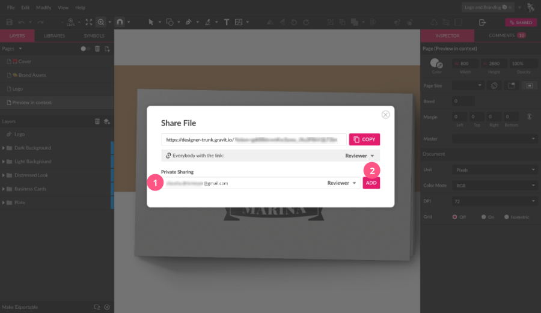
The guest will receive an email with a link with access to the file. This “magic link” creates a temporary account for the guest, and after one hour of access to the file, it’s necessary to create an account to continue accessing the file.
The Guest user can be attributed to any role with access to the same features of each role as a normal user.
Anonymous access
The public link can also be shared with people without a Gravit Designer account. Once the public link is opened by someone who’s not a user is presented with the file and limited access to some of the features, and a message at the bottom inviting to create an account, or log in to Gravit Designer.
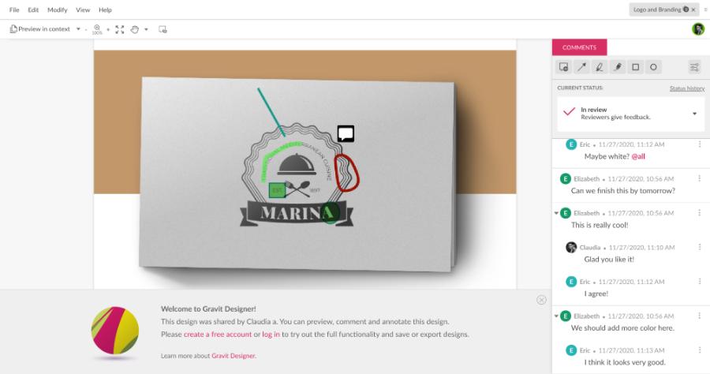
When the role is set for Reviewer or Approver, a dialog is presented so that the collaborator without an account can identify himself.
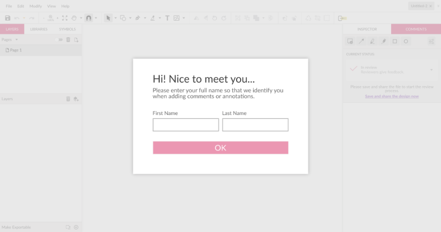